Change analysis for Burundi for PRIMAP-hist v2.8_final compared to
v2.7_final
This changelog is published under the creative commons non-commercial
share alike license. For more information see creativecommons.org.
Overview over
emissions by sector and gas
The following figures show the aggregate national total emissions
excluding LULUCF AR6GWP100 for the country reported priority scenario.
The dotted lines show the v2.7_final data.
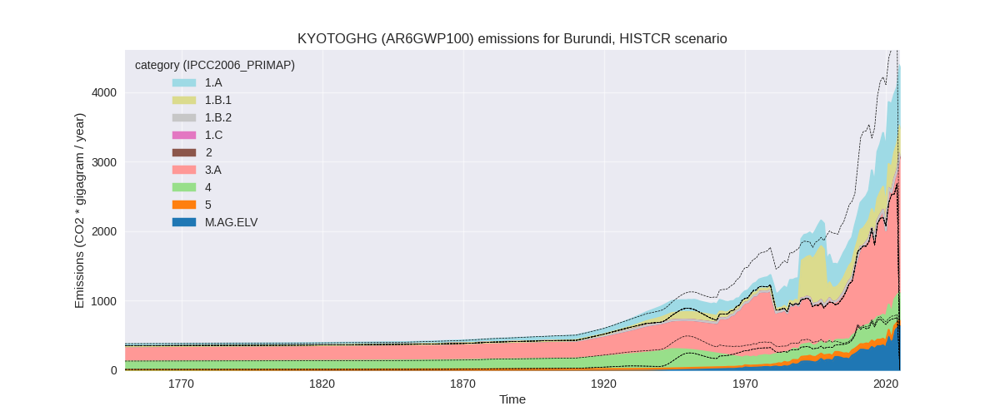
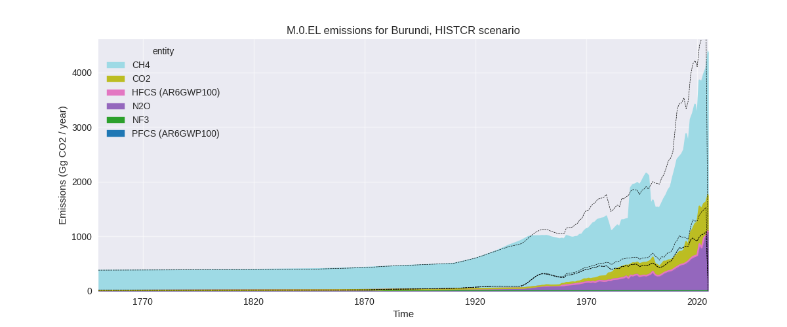
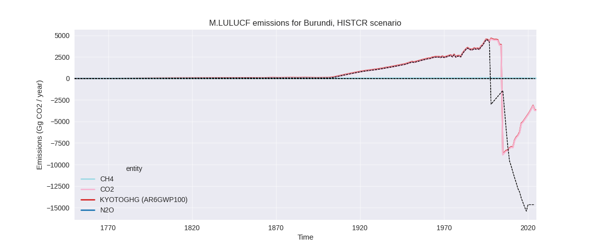
The following figures show the aggregate national total emissions
excluding LULUCF AR6GWP100 for the third party priority scenario. The
dotted lines show the v2.7_final data.
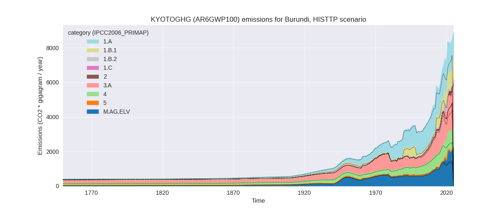
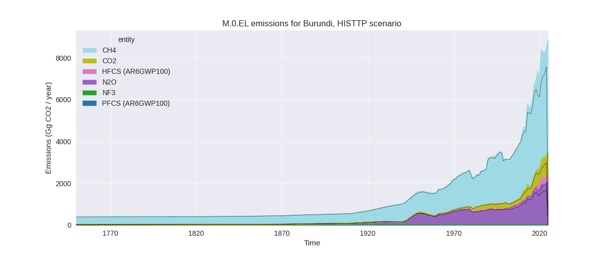
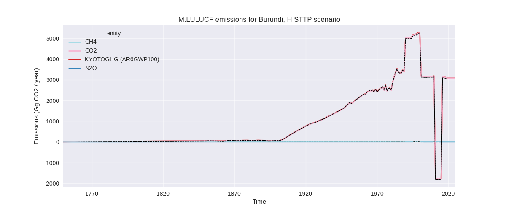
Used country reported data
The changelog with this information is available upon request for
non-commercial customers. Paying commercial customers will be provided
with the information.
Overview over changes
In the country reported priority scenario we have the following
changes for aggregate Kyoto GHG and national total emissions excluding
LULUCF (M.0.EL):
- Emissions in 2024 have changed by -15.3%% (-736.15 Gg CO2 / year)
- Emissions in 1990-2024 have changed by -15.8%% (-445.39 Gg CO2 / year)
In the third party priority scenario we have the following changes
for aggregate Kyoto GHG and national total emissions excluding LULUCF
(M.0.EL):
- Emissions in 2024 have changed by 11.2%% (843.64 Gg CO2 / year)
- Emissions in 1990-2024 have changed by 6.2%% (274.08 Gg CO2 / year)
Most
important changes per scenario and time frame
In the country reported priority scenario the
following sector-gas combinations have the highest absolute impact on
national total KyotoGHG (AR6GWP100) emissions in 2024
(up to 10 with either at least 0.2% impact on total emissions or at
least 20% change):
- 1: 1.A, CH4 with -1307.08 Gg CO2 / year (-86.9%, -27.2%)
- 2: 1.B.1, CH4 with 378.63 Gg CO2 / year (inf%, 7.9%)
- 3: M.AG.ELV, N2O with -365.20 Gg CO2 / year (-59.4%, -7.6%)
- 4: 3.A, CH4 with -245.19 Gg CO2 / year (-15.0%, -5.1%)
- 5: M.AG.ELV, CH4 with 213.12 Gg CO2 / year (167.2%, 4.4%)
- 6: 4, N2O with 212.06 Gg CO2 / year (783.6%, 4.4%)
- 7: 1.A, N2O with -160.27 Gg CO2 / year (-81.8%, -3.3%)
- 8: 1.A, CO2 with 155.69 Gg CO2 / year (36.8%, 3.2%)
- 9: 4, CH4 with 131.44 Gg CO2 / year (994.5%, 2.7%)
- 10: 3.A, N2O with 125.96 Gg CO2 / year (50.9%, 2.6%)
In the country reported priority scenario the
following sector-gas combinations have the highest absolute impact on
national total KyotoGHG (AR6GWP100) emissions in
1990-2024 (up to 10 with either at least 0.1% impact on
total emissions or at least 10% change):
- 1: 1.A, CH4 with -857.03 Gg CO2 / year (-85.8%, -30.4%)
- 2: 1.B.1, CH4 with 362.52 Gg CO2 / year (inf%, 12.8%)
- 3: M.AG.ELV, N2O with -332.51 Gg CO2 / year (-90.2%, -11.8%)
- 4: 4, N2O with 114.77 Gg CO2 / year (264.1%, 4.1%)
- 5: 1.A, N2O with -105.51 Gg CO2 / year (-81.7%, -3.7%)
- 6: 1.A, CO2 with 100.22 Gg CO2 / year (49.5%, 3.6%)
- 7: M.AG.ELV, CH4 with 82.90 Gg CO2 / year (69.0%, 2.9%)
- 8: 5, N2O with 82.25 Gg CO2 / year (inf%, 2.9%)
- 9: 4, CH4 with 69.17 Gg CO2 / year (828.1%, 2.5%)
- 10: 2, HFCS (AR6GWP100) with 15.48 Gg CO2 / year (inf%, 0.5%)
In the third party priority scenario the following
sector-gas combinations have the highest absolute impact on national
total KyotoGHG (AR6GWP100) emissions in 2024 (up to 10
with either at least 0.2% impact on total emissions or at least 20%
change):
- 1: M.AG.ELV, CH4 with 408.02 Gg CO2 / year (323.1%, 5.4%)
- 2: M.AG.ELV, N2O with 223.40 Gg CO2 / year (18.1%, 3.0%)
- 3: 3.A, CH4 with 153.91 Gg CO2 / year (8.9%, 2.0%)
- 4: 1.A, CH4 with -104.76 Gg CO2 / year (-13.4%, -1.4%)
- 5: 3.A, N2O with 73.58 Gg CO2 / year (53.9%, 1.0%)
- 6: 1.B.1, CH4 with 54.77 Gg CO2 / year (5.8%, 0.7%)
- 7: 4, CH4 with 53.09 Gg CO2 / year (5.4%, 0.7%)
- 8: 4, CO2 with 5.02 Gg CO2 / year (208.2%, 0.1%)
In the third party priority scenario the following
sector-gas combinations have the highest absolute impact on national
total KyotoGHG (AR6GWP100) emissions in 1990-2024 (up
to 10 with either at least 0.1% impact on total emissions or at least
10% change):
- 1: M.AG.ELV, CH4 with 53.73 Gg CO2 / year (66.6%, 1.2%)
- 2: 1.B.1, CH4 with 46.72 Gg CO2 / year (10.8%, 1.0%)
- 3: 3.A, CH4 with 41.48 Gg CO2 / year (4.5%, 0.9%)
- 4: M.AG.ELV, N2O with 39.90 Gg CO2 / year (5.4%, 0.9%)
- 5: 1.A, CH4 with 38.62 Gg CO2 / year (4.4%, 0.9%)
- 6: 1.A, CO2 with 20.12 Gg CO2 / year (5.5%, 0.5%)
- 7: 5, N2O with 8.52 Gg CO2 / year (11.6%, 0.2%)
- 8: 3.A, N2O with 7.15 Gg CO2 / year (15.2%, 0.2%)
- 9: 4, CH4 with 6.30 Gg CO2 / year (1.1%, 0.1%)
- 10: 1.A, N2O with 4.89 Gg CO2 / year (4.1%, 0.1%)
Notes on data changes
The changelog with this information is available upon request for
non-commercial customers. Paying commercial customers will be provided
with the information.
Changes by sector and gas
For each scenario and time frame the changes are displayed for all
individual sectors and all individual gases. In the sector plot we use
aggregate Kyoto GHGs in AR6GWP100. In the gas plot we usenational total
emissions without LULUCF.
country reported scenario
2024
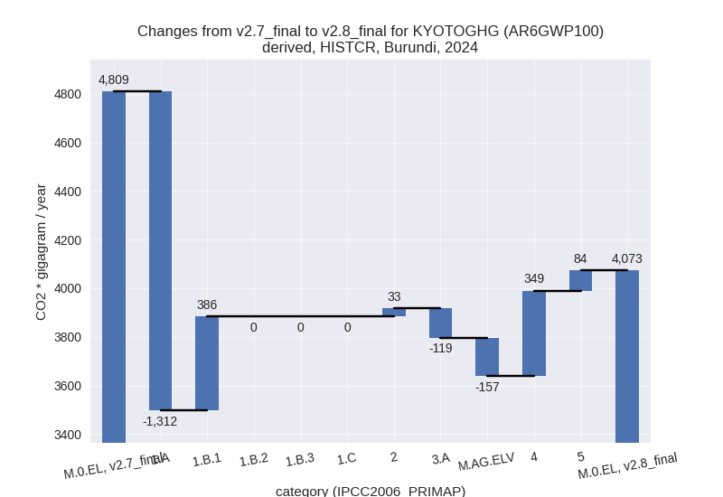
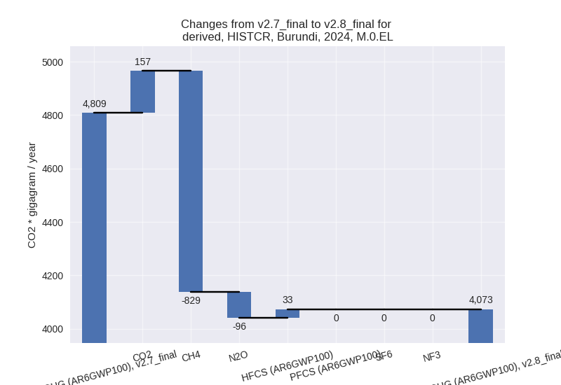
1990-2024
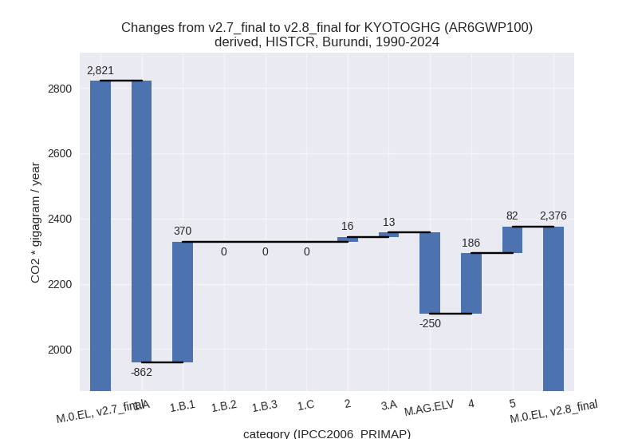
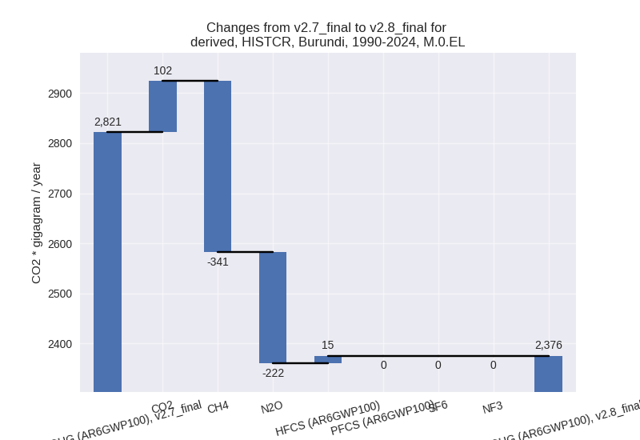
third party scenario
2024
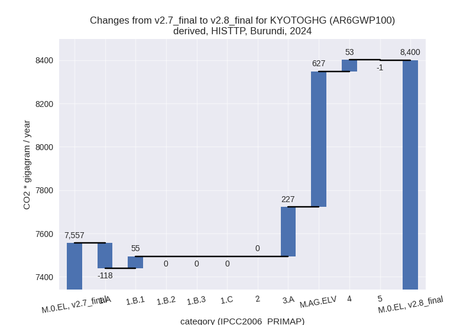
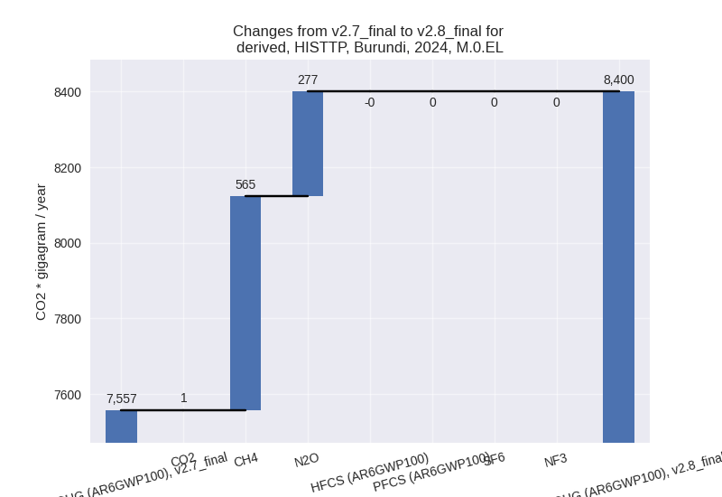
1990-2024
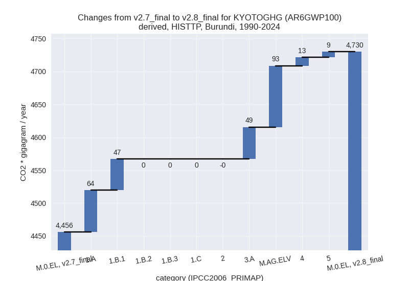
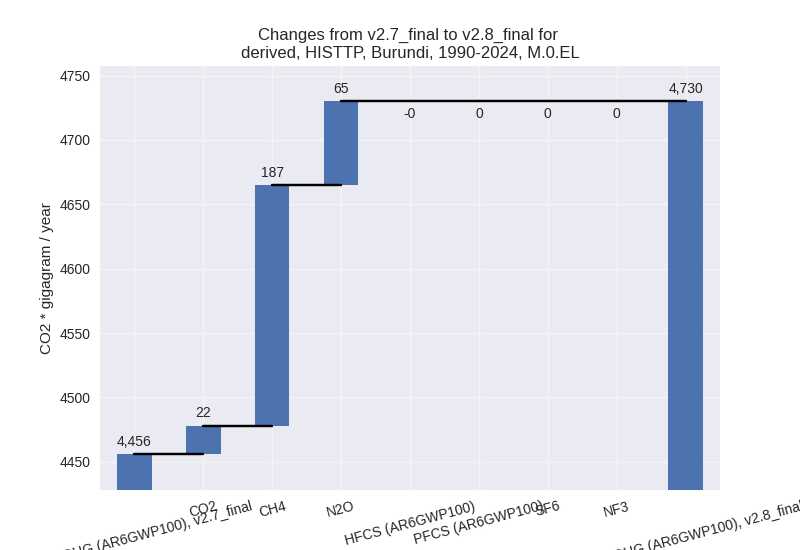
Detailed changes for the
scenarios:
country reported scenario
(HISTCR):
Most important changes
per time frame
For 2024 the following sector-gas combinations have
the highest absolute impact on national total KyotoGHG (AR6GWP100)
emissions in 2024 (up to 20 with either at least 0.2%
impact on total emissions or at least 20% change):
- 1: 1.A, CH4 with -1307.08 Gg CO2 / year (-86.9%), -27.2%)
- 2: 1.B.1, CH4 with 378.63 Gg CO2 / year (inf%), 7.9%)
- 3: M.AG.ELV, N2O with -365.20 Gg CO2 / year (-59.4%), -7.6%)
- 4: 3.A, CH4 with -245.19 Gg CO2 / year (-15.0%), -5.1%)
- 5: M.AG.ELV, CH4 with 213.12 Gg CO2 / year (167.2%), 4.4%)
- 6: 4, N2O with 212.06 Gg CO2 / year (783.6%), 4.4%)
- 7: 1.A, N2O with -160.27 Gg CO2 / year (-81.8%), -3.3%)
- 8: 1.A, CO2 with 155.69 Gg CO2 / year (36.8%), 3.2%)
- 9: 4, CH4 with 131.44 Gg CO2 / year (994.5%), 2.7%)
- 10: 3.A, N2O with 125.96 Gg CO2 / year (50.9%), 2.6%)
- 11: 5, N2O with 83.75 Gg CO2 / year (inf%), 1.7%)
- 12: 2, HFCS (AR6GWP100) with 32.56 Gg CO2 / year (inf%), 0.7%)
- 13: 1.B.1, N2O with 7.35 Gg CO2 / year (inf%), 0.2%)
- 14: 4, CO2 with 5.02 Gg CO2 / year (208.2%), 0.1%)
- 15: M.AG.ELV, CO2 with -4.61 Gg CO2 / year (-28.2%), -0.1%)
- 16: 2, N2O with 0.04 Gg CO2 / year (inf%), 0.0%)
- 17: 2, CH4 with -0.01 Gg CO2 / year (-100.0%), -0.0%)
For 1990-2024 the following sector-gas combinations
have the highest absolute impact on national total KyotoGHG (AR6GWP100)
emissions in 1990-2024 (up to 20 with either at least
0.1% impact on total emissions or at least 10% change):
- 1: 1.A, CH4 with -857.03 Gg CO2 / year (-85.8%), -30.4%)
- 2: 1.B.1, CH4 with 362.52 Gg CO2 / year (inf%), 12.8%)
- 3: M.AG.ELV, N2O with -332.51 Gg CO2 / year (-90.2%), -11.8%)
- 4: 4, N2O with 114.77 Gg CO2 / year (264.1%), 4.1%)
- 5: 1.A, N2O with -105.51 Gg CO2 / year (-81.7%), -3.7%)
- 6: 1.A, CO2 with 100.22 Gg CO2 / year (49.5%), 3.6%)
- 7: M.AG.ELV, CH4 with 82.90 Gg CO2 / year (69.0%), 2.9%)
- 8: 5, N2O with 82.25 Gg CO2 / year (inf%), 2.9%)
- 9: 4, CH4 with 69.17 Gg CO2 / year (828.1%), 2.5%)
- 10: 2, HFCS (AR6GWP100) with 15.48 Gg CO2 / year (inf%), 0.5%)
- 11: 3.A, N2O with 11.98 Gg CO2 / year (10.3%), 0.4%)
- 12: 1.B.1, N2O with 7.04 Gg CO2 / year (inf%), 0.2%)
- 13: 4, CO2 with 2.18 Gg CO2 / year (214.9%), 0.1%)
- 14: 2, CO2 with 0.24 Gg CO2 / year (10.9%), 0.0%)
- 15: 2, N2O with 0.03 Gg CO2 / year (inf%), 0.0%)
- 16: 2, CH4 with -0.00 Gg CO2 / year (-100.0%), -0.0%)
Changes in the main sectors for aggregate KyotoGHG (AR6GWP100)
are
- 1: Total sectoral emissions in 2022 are 1265.29 Gg
CO2 / year which is 33.1% of M.0.EL emissions. 2024 Emissions have
changed by -43.6% (-925.67 Gg CO2 /
year). 1990-2024 Emissions have changed by -37.0% (-492.76 Gg CO2 / year). For 2024
the changes per gas
are:
For 1990-2024 the changes per gas
are:
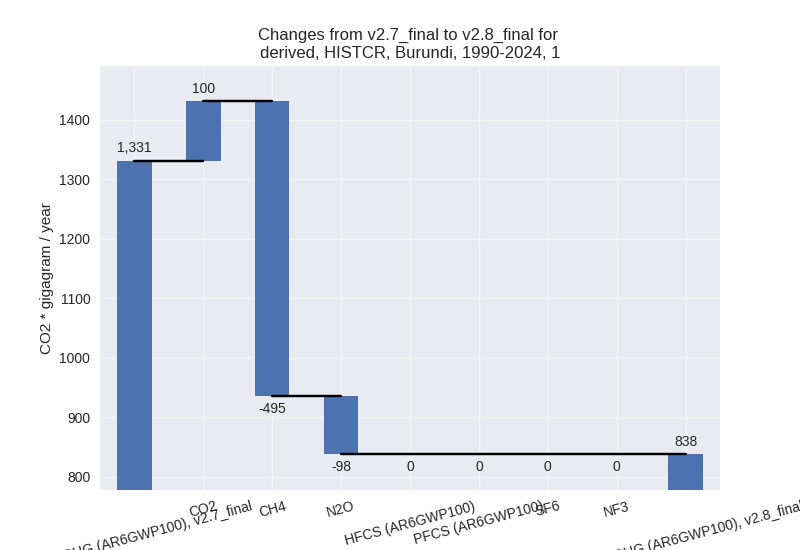
The changes come from the following subsectors:
- 1.A: Total sectoral emissions in 2022 are 909.22 Gg
CO2 / year which is 71.9% of category 1 emissions. 2024 Emissions have
changed by -61.8% (-1311.66 Gg CO2 /
year). 1990-2024 Emissions have changed by -64.8% (-862.33 Gg CO2 / year). For 2024
the changes per gas
are:
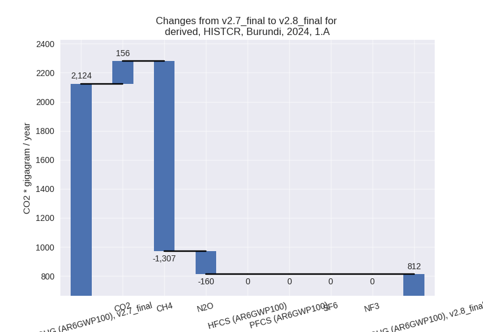
For 1990-2024 the changes per gas
are:
There is no subsector information available in PRIMAP-hist.
- 1.B.1: Total sectoral emissions in 2022 are 356.07
Gg CO2 / year which is 28.1% of category 1 emissions. 2024 Emissions
have changed by inf% (385.99 Gg CO2
/ year). 1990-2024 Emissions have changed by inf% (369.57 Gg CO2 / year). For 2024 the
changes per gas
are:
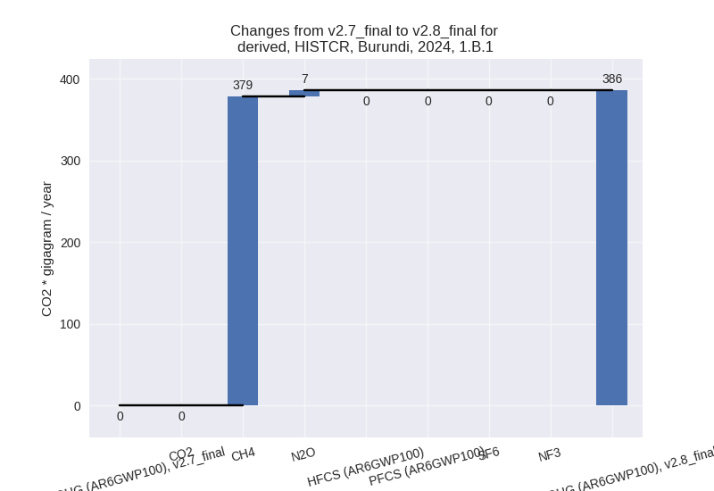
For 1990-2024 the changes per gas
are:
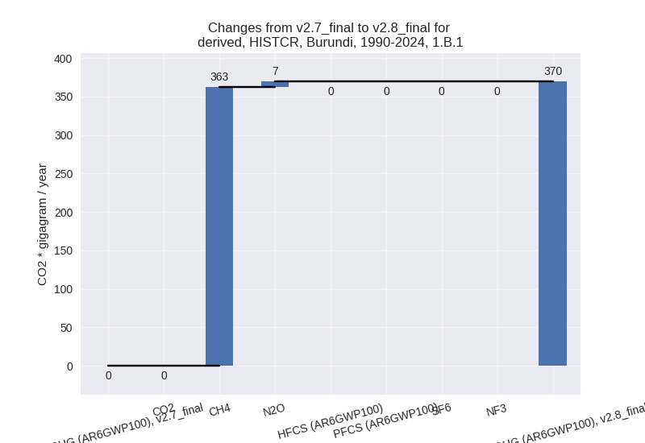
There is no subsector information available in PRIMAP-hist.
- 2: Total sectoral emissions in 2022 are 39.90 Gg
CO2 / year which is 1.0% of M.0.EL emissions. 2024 Emissions have
changed by 744.9% (33.16 Gg CO2 /
year). 1990-2024 Emissions have changed by 715.0% (15.75 Gg CO2 / year). For 2024 the
changes per gas
are:
For 1990-2024 the changes per gas
are:
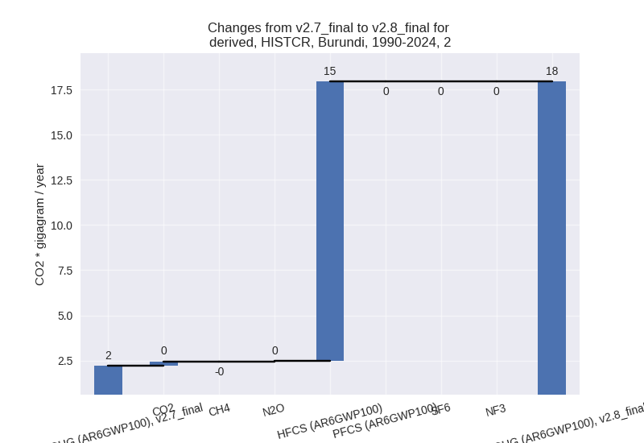
- M.AG: Total sectoral emissions in 2022 are 2063.27
Gg CO2 / year which is 54.0% of M.0.EL emissions. 2024 Emissions have
changed by -10.5% (-275.92 Gg CO2 /
year). 1990-2024 Emissions have changed by -16.5% (-236.73 Gg CO2 / year). For 2024
the changes per gas
are:
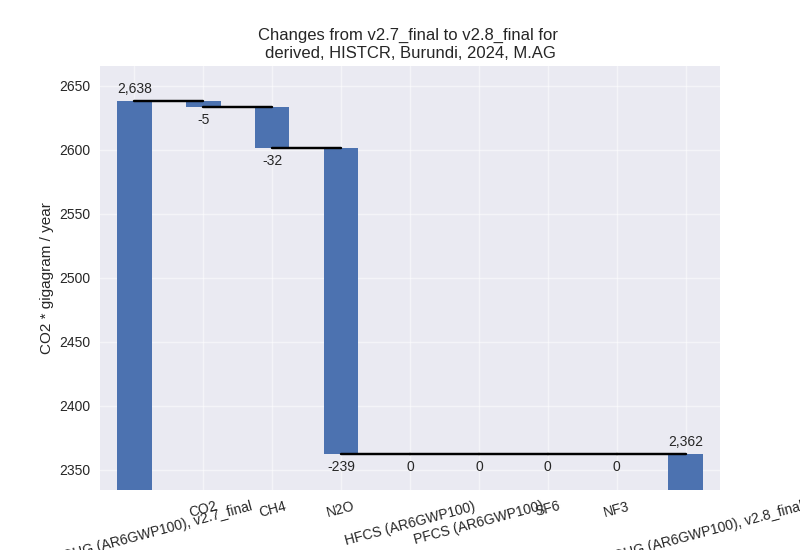
For 1990-2024 the changes per gas
are:
The changes come from the following subsectors:
- 3.A: Total sectoral emissions in 2022 are 1700.41
Gg CO2 / year which is 82.4% of category M.AG emissions. 2024 Emissions
have changed by -6.3% (-119.22 Gg
CO2 / year). 1990-2024 Emissions have changed by 1.4% (13.09 Gg CO2 / year). For 2024 the
changes per gas
are:
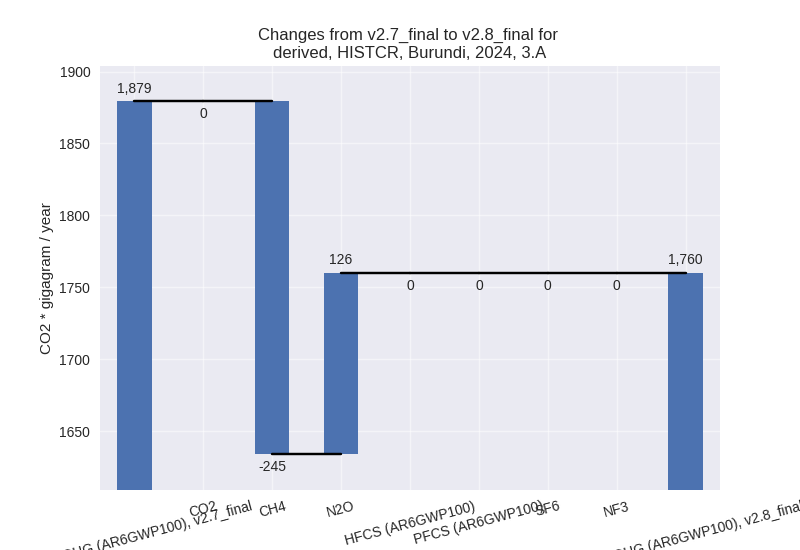
There is no subsector information available in PRIMAP-hist.
- M.AG.ELV: Total sectoral emissions in 2022 are
362.86 Gg CO2 / year which is 17.6% of category M.AG emissions. 2024
Emissions have changed by -20.7%
(-156.69 Gg CO2 / year). 1990-2024 Emissions have changed by -50.7% (-249.82 Gg CO2 / year). For 2024
the changes per gas
are:
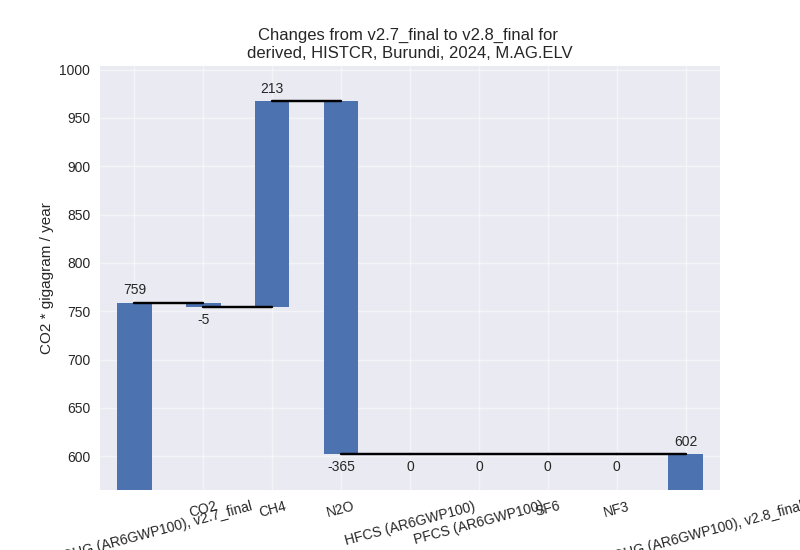
For 1990-2024 the changes per gas
are:
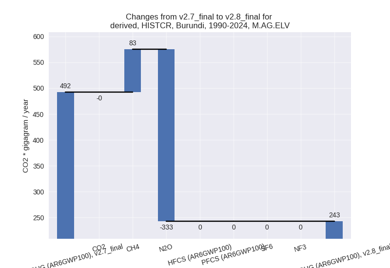
There is no subsector information available in PRIMAP-hist.
- 4: Total sectoral emissions in 2022 are 372.55 Gg
CO2 / year which is 9.7% of M.0.EL emissions. 2024 Emissions have
changed by 816.4% (348.52 Gg CO2 /
year). 1990-2024 Emissions have changed by 352.3% (186.12 Gg CO2 / year). For 2024
the changes per gas
are:
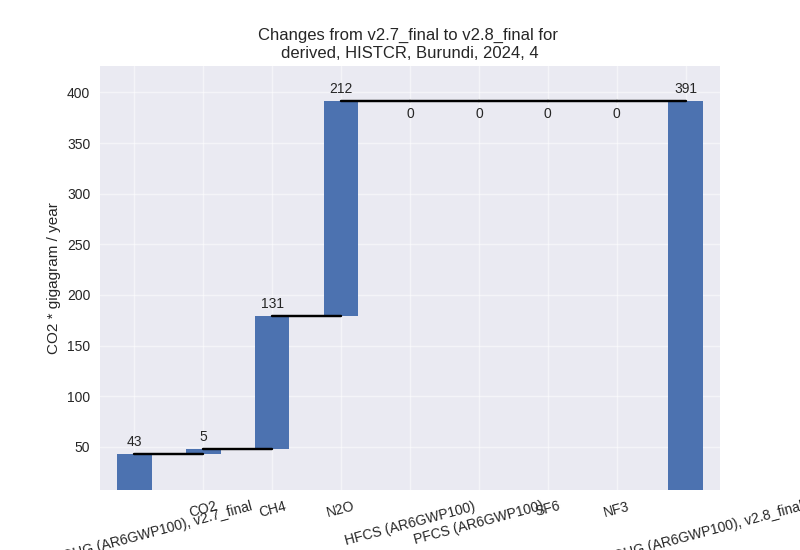
For 1990-2024 the changes per gas
are:
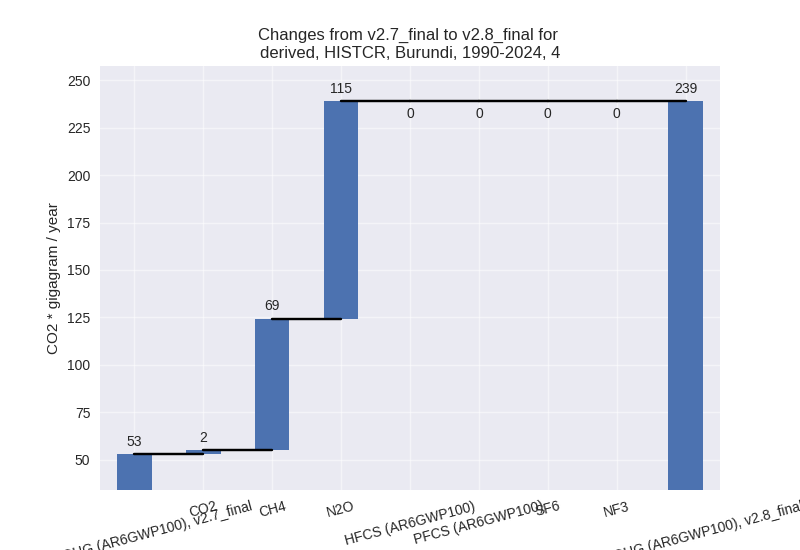
- 5: Total sectoral emissions in 2022 are 82.13 Gg
CO2 / year which is 2.1% of M.0.EL emissions. 2024 Emissions have
changed by inf% (83.75 Gg CO2 /
year). 1990-2024 Emissions have changed by inf% (82.25 Gg CO2 / year). For 2024 the
changes per gas
are:
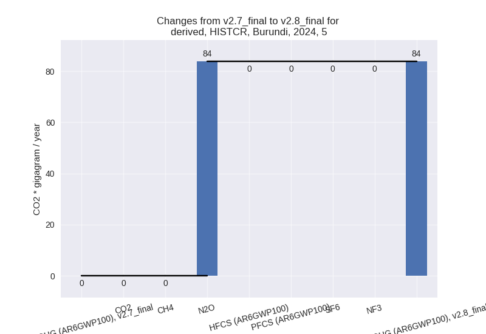
For 1990-2024 the changes per gas
are:
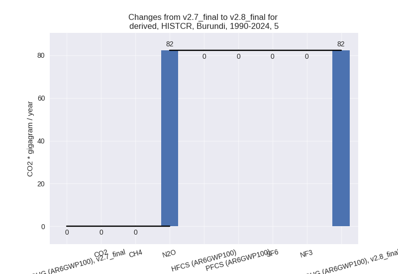
third party scenario (HISTTP):
Most important changes
per time frame
For 2024 the following sector-gas combinations have
the highest absolute impact on national total KyotoGHG (AR6GWP100)
emissions in 2024 (up to 20 with either at least 0.2%
impact on total emissions or at least 20% change):
- 1: M.AG.ELV, CH4 with 408.02 Gg CO2 / year (323.1%), 5.4%)
- 2: M.AG.ELV, N2O with 223.40 Gg CO2 / year (18.1%), 3.0%)
- 3: 3.A, CH4 with 153.91 Gg CO2 / year (8.9%), 2.0%)
- 4: 1.A, CH4 with -104.76 Gg CO2 / year (-13.4%), -1.4%)
- 5: 3.A, N2O with 73.58 Gg CO2 / year (53.9%), 1.0%)
- 6: 1.B.1, CH4 with 54.77 Gg CO2 / year (5.8%), 0.7%)
- 7: 4, CH4 with 53.09 Gg CO2 / year (5.4%), 0.7%)
- 8: 4, CO2 with 5.02 Gg CO2 / year (208.2%), 0.1%)
- 9: M.AG.ELV, CO2 with -4.61 Gg CO2 / year (-28.2%), -0.1%)
- 10: 2, CH4 with -0.01 Gg CO2 / year (-100.0%), -0.0%)
For 1990-2024 the following sector-gas combinations
have the highest absolute impact on national total KyotoGHG (AR6GWP100)
emissions in 1990-2024 (up to 20 with either at least
0.1% impact on total emissions or at least 10% change):
- 1: M.AG.ELV, CH4 with 53.73 Gg CO2 / year (66.6%), 1.2%)
- 2: 1.B.1, CH4 with 46.72 Gg CO2 / year (10.8%), 1.0%)
- 3: 3.A, CH4 with 41.48 Gg CO2 / year (4.5%), 0.9%)
- 4: M.AG.ELV, N2O with 39.90 Gg CO2 / year (5.4%), 0.9%)
- 5: 1.A, CH4 with 38.62 Gg CO2 / year (4.4%), 0.9%)
- 6: 1.A, CO2 with 20.12 Gg CO2 / year (5.5%), 0.5%)
- 7: 5, N2O with 8.52 Gg CO2 / year (11.6%), 0.2%)
- 8: 3.A, N2O with 7.15 Gg CO2 / year (15.2%), 0.2%)
- 9: 4, CH4 with 6.30 Gg CO2 / year (1.1%), 0.1%)
- 10: 1.A, N2O with 4.89 Gg CO2 / year (4.1%), 0.1%)
- 11: 4, CO2 with 2.18 Gg CO2 / year (214.9%), 0.0%)
- 12: 1.B.1, N2O with 0.62 Gg CO2 / year (10.8%), 0.0%)
- 13: 2, CH4 with -0.00 Gg CO2 / year (-100.0%), -0.0%)
Changes in the main sectors for aggregate KyotoGHG (AR6GWP100)
are
- 1: Total sectoral emissions in 2022 are 2681.95 Gg
CO2 / year which is 32.4% of M.0.EL emissions. 2024 Emissions have
changed by -2.3% (-62.23 Gg CO2 /
year). 1990-2024 Emissions have changed by 6.1% (110.97 Gg CO2 / year). For 2024 the
changes per gas
are:
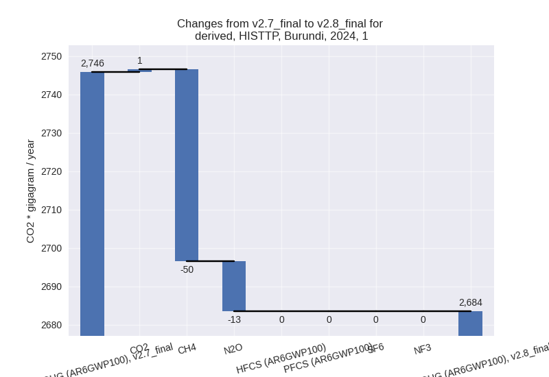
For 1990-2024 the changes per gas
are:
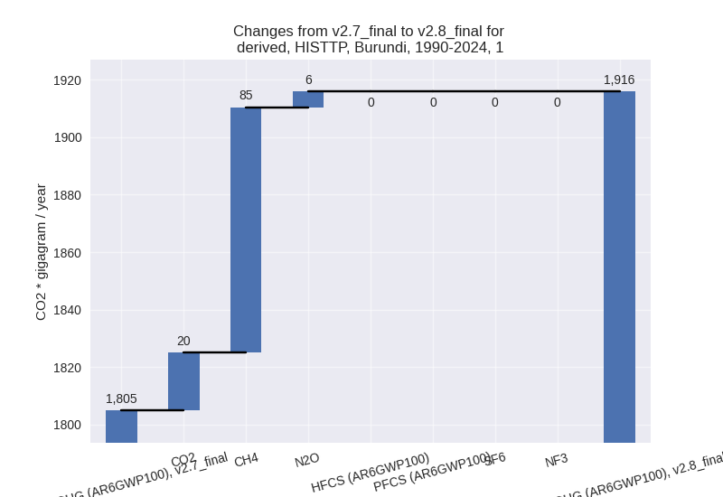
The changes come from the following subsectors:
- 1.A: Total sectoral emissions in 2022 are 1678.39
Gg CO2 / year which is 62.6% of category 1 emissions. 2024 Emissions
have changed by -6.6% (-117.73 Gg
CO2 / year). 1990-2024 Emissions have changed by 4.7% (63.63 Gg CO2 / year). For 2024 the
changes per gas
are:
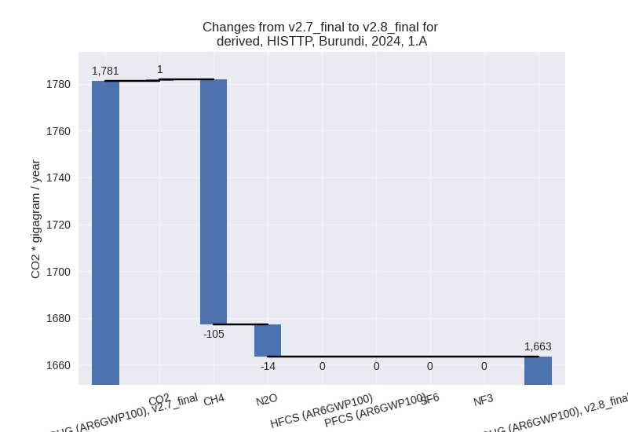
For 1990-2024 the changes per gas
are:
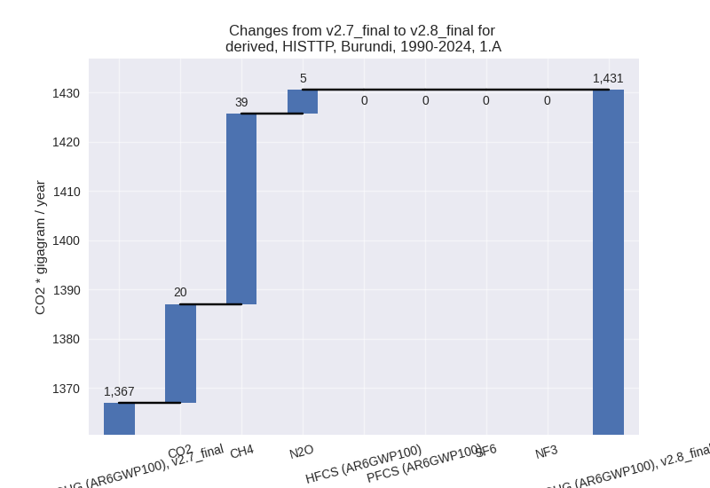
There is no subsector information available in PRIMAP-hist.
- 1.B.1: Total sectoral emissions in 2022 are 1003.56
Gg CO2 / year which is 37.4% of category 1 emissions. 2024 Emissions
have changed by 5.8% (55.50 Gg CO2 /
year). 1990-2024 Emissions have changed by 10.8% (47.34 Gg CO2 / year). For 2024 the
changes per gas
are:
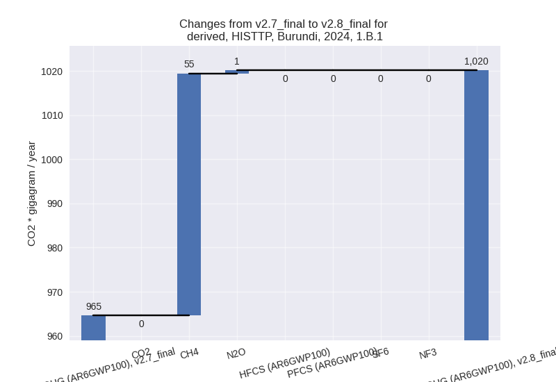
For 1990-2024 the changes per gas
are:
There is no subsector information available in PRIMAP-hist.
- 1.B.2: Total sectoral emissions in 2022 are 0.00 Gg
CO2 / year which is 0.0% of category 1 emissions. 2024 Emissions have
changed by 0.0% (0.00 Gg CO2 /
year). 1990-2024 Emissions have changed by 0.0% (0.00 Gg CO2 / year).
- 2: Total sectoral emissions in 2022 are 353.34 Gg
CO2 / year which is 4.3% of M.0.EL emissions. 2024 Emissions have
changed by 0.0% (0.16 Gg CO2 /
year). 1990-2024 Emissions have changed by -0.1% (-0.12 Gg CO2 / year).
- M.AG: Total sectoral emissions in 2022 are 4085.57
Gg CO2 / year which is 49.4% of M.0.EL emissions. 2024 Emissions have
changed by 26.4% (854.31 Gg CO2 /
year). 1990-2024 Emissions have changed by 7.9% (142.06 Gg CO2 / year). For 2024 the
changes per gas
are:
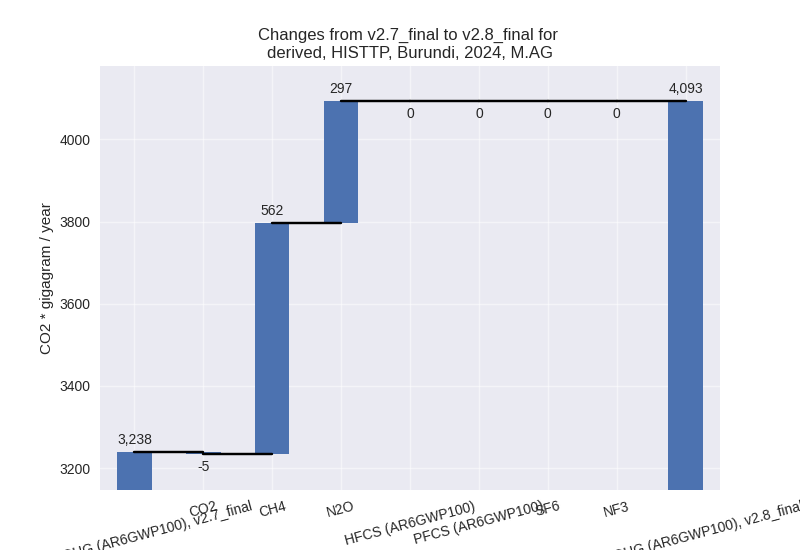
For 1990-2024 the changes per gas
are:
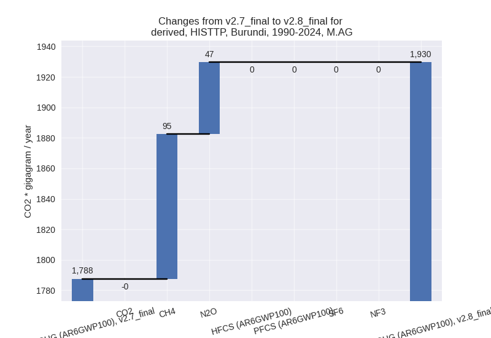
The changes come from the following subsectors:
- 3.A: Total sectoral emissions in 2022 are 2055.14
Gg CO2 / year which is 50.3% of category M.AG emissions. 2024 Emissions
have changed by 12.2% (227.49 Gg CO2
/ year). 1990-2024 Emissions have changed by 5.0% (48.63 Gg CO2 / year). For 2024 the
changes per gas
are:
For 1990-2024 the changes per gas
are:
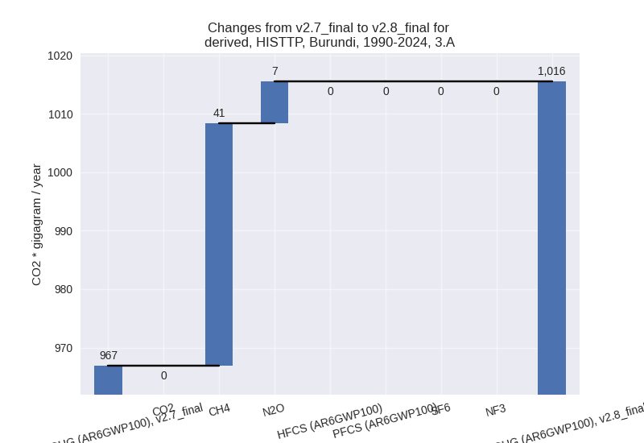
There is no subsector information available in PRIMAP-hist.
- M.AG.ELV: Total sectoral emissions in 2022 are
2030.43 Gg CO2 / year which is 49.7% of category M.AG emissions. 2024
Emissions have changed by 45.5%
(626.82 Gg CO2 / year). 1990-2024 Emissions have changed by 11.4% (93.43 Gg CO2 / year). For 2024 the
changes per gas
are:
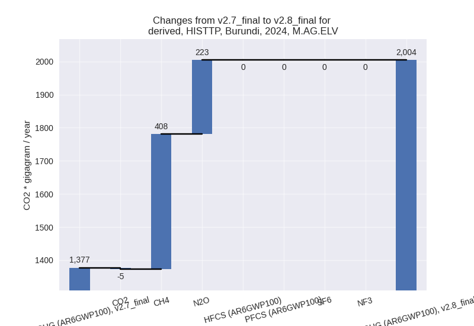
For 1990-2024 the changes per gas
are:
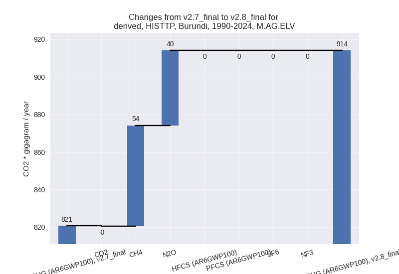
There is no subsector information available in PRIMAP-hist.
- 4: Total sectoral emissions in 2022 are 1070.03 Gg
CO2 / year which is 12.9% of M.0.EL emissions. 2024 Emissions have
changed by 4.9% (52.59 Gg CO2 /
year). 1990-2024 Emissions have changed by 1.9% (12.65 Gg CO2 / year). For 2024 the
changes per gas
are:
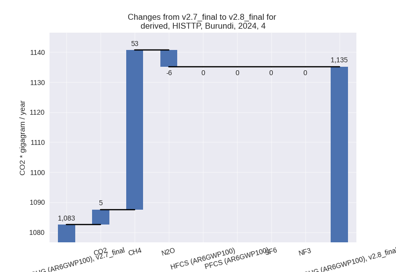
- 5: Total sectoral emissions in 2022 are 82.13 Gg
CO2 / year which is 1.0% of M.0.EL emissions. 2024 Emissions have
changed by -1.4% (-1.18 Gg CO2 /
year). 1990-2024 Emissions have changed by 11.6% (8.52 Gg CO2 / year). For 1990-2024
the changes per gas
are:
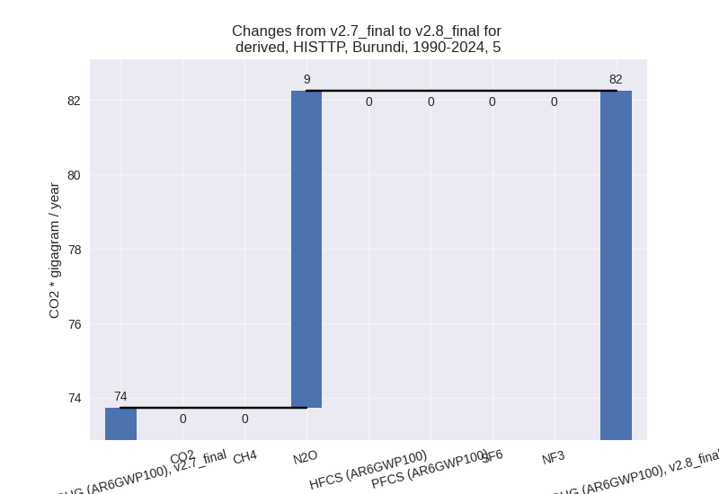